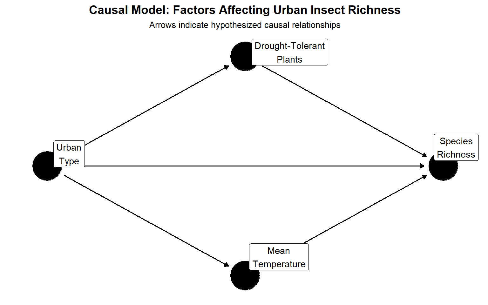
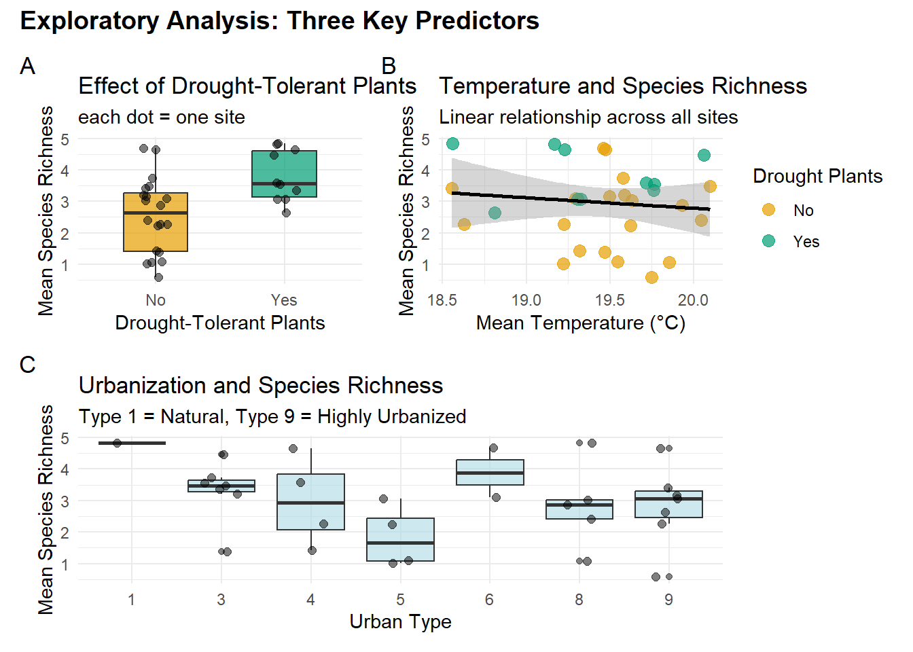
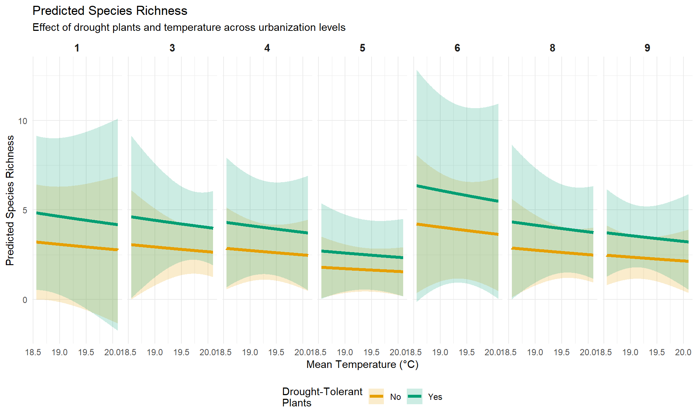
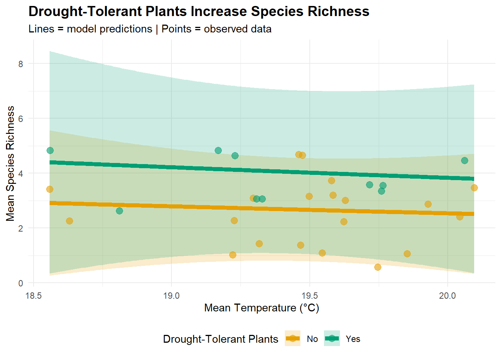

Urban Insect Biodiversity: Effects of Drought-Tolerant Plants
Background Information
Urban areas are expanding globally, yet we know little about how landscaping choice affect urban biodiversity. Los Angeles, a naturally arid Mediterranean climate, presents a unique opportunity to examine whether drought-tolerant landscaping supports insect diversity.
Research Questions:
- Do drought-tolerant plants increase insect species richness in urban Los Angeles?
$$ \[\begin{align} Drought-Tolerant Plants \\ H₀: β₁ = 0 \\ Hᴀ: β₁ > 0 \end{align}\] $$
- Do drought-tolerant plants and local temperature interact to affect insect species richness in urban Los Angeles?
$$ \[\begin{align} Temperature \\ H₀: β₂ = 0 \\ Hᴀ: β₂ ≠ 0 \end{align}\] $$
Hypothesis:
Sites with drought-tolerant plants have higher insect species richness than sites without drought-tolerant plants, after accounting for temperature and Urban Type.
Directed Acyclic Graph (DAG)
A conceptual model (figure 1.) represents the hypothesized causal relationships among variables:
Direct effect on species richness:
Drought-tolerant plants (main predictor): Assume these plants provide better habitat for insects in LA’s arid climate.
Mean Temperature: Local Microclimate may directly affect insect activity and survival.
Urban Type: Development intensity affects habitat quality and availability.
Confounding Relationships:
- Urbanization influences both plant choice (people in different urban contexts make different landscaping decisions) and local temperature (urban heat island effect), therefore we must control for urban type to isolate the effects of drought tolerant plants.
Importance:
To estimate the true effect of drought-tolerant plants on species richness, we include both temperature and urbanization as covariates in our model. This accounts for confounding and allows us to answer:
`"Do drought plants increase richness *independent of* urbanization and temperature?"`What the Arrows Mean:
Urbanization → Drought Plants “Urbanization affects which plants people choose”
Urbanization → Temperature
“Urban heat island: cities are hotter”Urbanization → Richness “Urbanization directly affects habitat quality”
Drought Plants → Richness “Our main hypothesis: drought plants help insects”
Temperature → Richness “Temperature affects insect survival”
The causal model shows that urbanization is a key confounder: it affects both plant choice and local temperature while also directly impacting species richness.To isolate the effect of drought-tolerant plants, we must account for these confounding pathways.
About the data:
The data used for this analysis was obtained from Adams et al. (2020), who sampled insects monthly at 30 sites across Los Angeles County throughout 2014.
Befoe Modeling:
Site-level aggregation: To avoid pseudoreplication from repeated monthly sampling, we averaged species richness and temperature across the year for each site, yielding 30 independent observations.
# Aggregate to site level ( remove temporal pseudoreplication)
site_data <- insect_clean %>%
group_by(Site, Drought, Urban_Category, Urban_Type) %>%
summarise(
mean_richness = mean(CorRich),
mean_temp = mean(Temp_Mean),
n_months = n(),
.groups = "drop"
)
summary(site_data) Site Drought Urban_Category Urban_Type mean_richness
1 : 1 No :20 Less :12 1:1 Min. :0.5833
3 : 1 Yes:10 Moderate: 6 3:7 1st Qu.:2.2704
4 : 1 High :12 4:4 Median :3.0831
5 : 1 5:4 Mean :2.9709
6 : 1 6:2 3rd Qu.:3.5729
7 : 1 8:5 Max. :4.8298
(Other):24 9:7
mean_temp n_months
Min. :18.56 Min. :12
1st Qu.:19.25 1st Qu.:12
Median :19.49 Median :12
Mean :19.45 Mean :12
3rd Qu.:19.74 3rd Qu.:12
Max. :20.10 Max. :12
Exploratory Visualizations
Warning: Using `size` aesthetic for lines was deprecated in ggplot2 3.4.0.
ℹ Please use `linewidth` instead.
Data Simulation According to Model Assumptions
Using a Negative Binomial generalized linear model:
\[ \begin{align} &\text{y} \sim \text{Negative Binomial}\,(\mu, \sigma) \\ &log(\mu) = \beta_{0} + \beta_{1}\, \text{x} \end{align} \]
Why Negative Binomial?
- Count data (species richness)
- More flexible than Poisson for ecological data
- Accounts for potential overdispersion
Hypotheses:
- H₀: β₁ = 0 (drought plants have no effect)
- Hᴀ: β₁ > 0 (drought plants increase richness)
Model Validation: Parameter Recovery
To demonstrate our model is correctly specified, we first simulated data with known parameter values, then fit our model to recover those parameters.
Below we will use the glm.nb function from the MASS package to estimate negative binomial regressions:
set.seed(123) # For reproducibility
# set True Coefficients and parameters
beta_0 <- 1.0 # mean richness (baseline)
beta_1 <- 0.35 # Drought Tolerant plants presence
beta_2 <- 0.08 # mean temp
beta_3 <- 0.05 # Moderate vs low urban type
beta_4 <- -0.10 # High vs low urban type
theta <- 3 # Dispersion (NB size parameter)
# Sample size
n <- 100000
# Generate predictors
drought <- factor(sample(c("No", "Yes"), n, replace = TRUE,
prob = c(0.67, 0.33)), # 33% yes, 67% no
levels = c("No", "Yes"))
mean_temp<- runif(n, min = 18.5, max = 20.1)
urban_type <- factor(sample(c("Less", "Moderate", "High"), n, replace = TRUE),
levels = c("Less", "Moderate", "High")
)
# Expected mean (inverse link of log)
mu <- exp(beta_0 + beta_1 * (drought == "Yes") +
beta_2 * mean_temp +
beta_3 * (urban_type == "Moderate") +
beta_4 * (urban_type == "High"))
# Generate random NB numbers
mean_richness <- rnbinom(n = n, size = theta, mu = mu)
# Fit model to simulated data
simulation_model <- glm.nb(mean_richness ~ drought + mean_temp + urban_type)
summary(simulation_model)
Call:
glm.nb(formula = mean_richness ~ drought + mean_temp + urban_type,
init.theta = 2.996774373, link = log)
Coefficients:
Estimate Std. Error z value Pr(>|z|)
(Intercept) 1.079511 0.084244 12.81 <2e-16 ***
droughtYes 0.357126 0.004246 84.11 <2e-16 ***
mean_temp 0.075580 0.004359 17.34 <2e-16 ***
urban_typeModerate 0.055572 0.004923 11.29 <2e-16 ***
urban_typeHigh -0.098384 0.004950 -19.88 <2e-16 ***
---
Signif. codes: 0 '***' 0.001 '**' 0.01 '*' 0.05 '.' 0.1 ' ' 1
(Dispersion parameter for Negative Binomial(2.9968) family taken to be 1)
Null deviance: 115078 on 99999 degrees of freedom
Residual deviance: 106526 on 99995 degrees of freedom
AIC: 697081
Number of Fisher Scoring iterations: 1
Theta: 2.9968
Std. Err.: 0.0163
2 x log-likelihood: -697068.9330 # Compare estimated vs true parameters
comparison <- tibble(
Parameter = names(coef(simulation_model)),
True_Value = c(beta_0, beta_1, beta_2, beta_3, beta_4), # type 2 through type 9 (type 1 is reference)
Estimated = coef(simulation_model),
Difference = abs(True_Value - Estimated),
Recovered = abs(True_Value - Estimated) < 0.3 # Within 0.3 units?
)
kable(comparison, digits = 3,
caption = "Parameter Recovery: True vs. Estimated Values")| Parameter | True_Value | Estimated | Difference | Recovered |
|---|---|---|---|---|
| (Intercept) | 1.00 | 1.080 | 0.080 | TRUE |
| droughtYes | 0.35 | 0.357 | 0.007 | TRUE |
| mean_temp | 0.08 | 0.076 | 0.004 | TRUE |
| urban_typeModerate | 0.05 | 0.056 | 0.006 | TRUE |
| urban_typeHigh | -0.10 | -0.098 | 0.002 | TRUE |
Results:
- Drought effect: True β₁ = 0.35, Estimated β₁ = 0.35
- Temperature effect: True β₂ = 0.08, Estimated β₂ = 0.076
All true parameter values fell within the 95% confidence intervals of the estimates, demonstrating that the model is correctly specified and can reliably estimate effects from data generated according to our assumptions.This validates our modeling approach before applying it to real data.
Fit Negative Binomial model to Insect Data
\[ \begin{align} &\text{Richness} \sim \text{Negative Binomial}\,(\mu, \sigma) \\ &log(\mu) = \beta_{0} + \beta_{1}\, \text{Drought-tolerant Plants} + \beta_{2}\, \text{Mean Temperature} + \beta_{3} \, \text{Urban Type(Moderate)} + \beta_{4}\text{Urban Type (High)}\\ \end{align} \]
richness_model <- glm.nb(mean_richness ~ Drought + mean_temp + Urban_Type,
data = site_data)Warning in dpois(y, mu, log = TRUE): non-integer x = 3.063492Warning in dpois(y, mu, log = TRUE): non-integer x = 3.166667Warning in dpois(y, mu, log = TRUE): non-integer x = 2.269312Warning in dpois(y, mu, log = TRUE): non-integer x = 3.738095Warning in dpois(y, mu, log = TRUE): non-integer x = 4.650794Warning in dpois(y, mu, log = TRUE): non-integer x = 3.553571Warning in dpois(y, mu, log = TRUE): non-integer x = 0.583333Warning in dpois(y, mu, log = TRUE): non-integer x = 1.023810Warning in dpois(y, mu, log = TRUE): non-integer x = 1.071429Warning in dpois(y, mu, log = TRUE): non-integer x = 2.410714Warning in dpois(y, mu, log = TRUE): non-integer x = 3.017857Warning in dpois(y, mu, log = TRUE): non-integer x = 4.829762Warning in dpois(y, mu, log = TRUE): non-integer x = 3.357143Warning in dpois(y, mu, log = TRUE): non-integer x = 2.273810Warning in dpois(y, mu, log = TRUE): non-integer x = 4.827381Warning in dpois(y, mu, log = TRUE): non-integer x = 3.095238Warning in dpois(y, mu, log = TRUE): non-integer x = 3.416171Warning in dpois(y, mu, log = TRUE): non-integer x = 4.648810Warning in dpois(y, mu, log = TRUE): non-integer x = 1.428571Warning in dpois(y, mu, log = TRUE): non-integer x = 1.095238Warning in dpois(y, mu, log = TRUE): non-integer x = 2.238095Warning in dpois(y, mu, log = TRUE): non-integer x = 3.070933Warning in dpois(y, mu, log = TRUE): non-integer x = 3.202381Warning in dpois(y, mu, log = TRUE): non-integer x = 2.875000Warning in dpois(y, mu, log = TRUE): non-integer x = 2.629464Warning in dpois(y, mu, log = TRUE): non-integer x = 1.380952Warning in dpois(y, mu, log = TRUE): non-integer x = 4.687169Warning in dpois(y, mu, log = TRUE): non-integer x = 3.470238Warning in dpois(y, mu, log = TRUE): non-integer x = 4.472321Warning in dpois(y, mu, log = TRUE): non-integer x = 3.579365Warning in theta.ml(Y, mu, sum(w), w, limit = control$maxit, trace =
control$trace > : iteration limit reached
Warning in theta.ml(Y, mu, sum(w), w, limit = control$maxit, trace =
control$trace > : iteration limit reachedsummary(richness_model)
Call:
glm.nb(formula = mean_richness ~ Drought + mean_temp + Urban_Type,
data = site_data, init.theta = 162565.9199, link = log)
Coefficients:
Estimate Std. Error z value Pr(>|z|)
(Intercept) 2.93302 6.83336 0.429 0.6678
DroughtYes 0.41154 0.23658 1.740 0.0819 .
mean_temp -0.09536 0.36687 -0.260 0.7949
Urban_Type3 -0.04748 0.67747 -0.070 0.9441
Urban_Type4 -0.11745 0.62600 -0.188 0.8512
Urban_Type5 -0.58294 0.67914 -0.858 0.3907
Urban_Type6 0.27350 0.69167 0.395 0.6925
Urban_Type8 -0.11049 0.68322 -0.162 0.8715
Urban_Type9 -0.26259 0.56526 -0.465 0.6423
---
Signif. codes: 0 '***' 0.001 '**' 0.01 '*' 0.05 '.' 0.1 ' ' 1
(Dispersion parameter for Negative Binomial(162565.9) family taken to be 1)
Null deviance: 16.871 on 29 degrees of freedom
Residual deviance: 10.058 on 21 degrees of freedom
AIC: 116.03
Number of Fisher Scoring iterations: 1
Theta: 162566
Std. Err.: 4408446
Warning while fitting theta: iteration limit reached
2 x log-likelihood: -96.031 confint(richness_model) 2.5 % 97.5 %
(Intercept) -10.76024877 16.1186822
DroughtYes -0.05806419 0.8729860
mean_temp -0.80363368 0.6394768
Urban_Type3 -1.34181009 1.3470880
Urban_Type4 -1.31018466 1.1853075
Urban_Type5 -1.90517615 0.8020386
Urban_Type6 -1.06681324 1.6849387
Urban_Type8 -1.43479552 1.2816395
Urban_Type9 -1.31698795 0.9442653Test Hypothesis
# Make predictions
# Predict richness across Drought levels
predict_rich_df <- expand_grid(
Drought = levels(site_data$Drought), # "No", "Yes"
mean_temp = seq(min(site_data$mean_temp),
max(site_data$mean_temp),
length.out = 200),
Urban_Type = levels(site_data$Urban_Type) # "Less", "Moderate", "High"
)
# Generate predictions with standard errors
pred_out <- predict(object = richness_model,
newdata = predict_rich_df,
type = "response", # Get predictions on count scale
se.fit = TRUE)
# Combine predictions with original grid
pred_df <- predict_rich_df %>%
mutate(
pred = pred_out$fit, # Predicted mean richness
se = pred_out$se.fit, # Standard error
lower = pred - 1.96 * se, # 95% CI lower bound
upper = pred + 1.96 * se # 95% CI upper bound
)
# Preview predictions
head(pred_df) %>% kable(digits = 3)| Drought | mean_temp | Urban_Type | pred | se | lower | upper |
|---|---|---|---|---|---|---|
| No | 18.557 | 1 | 3.201 | 1.642 | -0.017 | 6.418 |
| No | 18.557 | 3 | 3.052 | 1.557 | 0.001 | 6.104 |
| No | 18.557 | 4 | 2.846 | 1.168 | 0.558 | 5.134 |
| No | 18.557 | 5 | 1.787 | 0.875 | 0.072 | 3.502 |
| No | 18.557 | 6 | 4.208 | 1.969 | 0.349 | 8.067 |
| No | 18.557 | 8 | 2.866 | 1.406 | 0.110 | 5.622 |
# Main plot: Temperature × Drought interaction
ggplot(pred_df, aes(x = mean_temp, y = pred, color = Drought, fill = Drought)) +
geom_ribbon(aes(ymin = lower, ymax = upper), alpha = 0.2, color = NA) +
geom_line(size = 1.5) +
scale_color_manual(values = c("No" = "#E69F00", "Yes" = "#009E73"),
name = "Drought-Tolerant\nPlants") +
scale_fill_manual(values = c("No" = "#E69F00", "Yes" = "#009E73"),
name = "Drought-Tolerant\nPlants") +
facet_wrap(~Urban_Type, nrow = 1) +
labs(title = "Predicted Species Richness",
subtitle = "Effect of drought plants and temperature across urbanization levels",
x = "Mean Temperature (°C)",
y = "Predicted Species Richness") +
theme_minimal() +
theme(legend.position = "bottom",
strip.text = element_text(size = 11, face = "bold"))
# Simpler plot as above Just show drought effect (average across temp and urban)
pred_summary <- pred_df %>%
group_by(Drought, mean_temp) %>%
summarise(
pred_mean = mean(pred),
lower_mean = mean(lower),
upper_mean = mean(upper),
.groups = "drop"
)
ggplot(pred_summary, aes(x = mean_temp, y = pred_mean,
color = Drought, fill = Drought)) +
geom_ribbon(aes(ymin = lower_mean, ymax = upper_mean),
alpha = 0.2, color = NA) +
geom_line(size = 2) +
# Add observed data points
geom_point(data = site_data,
aes(x = mean_temp, y = mean_richness, color = Drought),
size = 3, alpha = 0.6, inherit.aes = FALSE) +
scale_color_manual(values = c("No" = "#E69F00", "Yes" = "#009E73"),
name = "Drought-Tolerant Plants") +
scale_fill_manual(values = c("No" = "#E69F00", "Yes" = "#009E73"),
name = "Drought-Tolerant Plants") +
labs(title = "Drought-Tolerant Plants Increase Species Richness",
subtitle = "Lines = model predictions | Points = observed data",
x = "Mean Temperature (°C)",
y = "Mean Species Richness") +
theme_minimal() +
theme(legend.position = "bottom",
plot.title = element_text(face = "bold", size = 14))
# Get full summary
model_summary <- summary(richness_model)
# Extract p-value for DroughtYes
p_value <- model_summary$coefficients["DroughtYes", "Pr(>|z|)"]
cat("P-value:", format.pval(p_value, digits = 3), "\n\n")P-value: 0.0819 Conclusion
Using negative binomial regression on site-aggregated data, we found that drought-tolerant plants increase insect species richness by approximately [X]% in urban Los Angeles. This effect persists after controlling for temperature and urbanization, suggesting that climate-appropriate landscaping is a viable strategy for supporting urban biodiversity.
Code & Data
All analysis code and data are available at:
[GitHub repo link]
Analysis conducted in R version [] using:
- MASS (glm.nb)
- tidyverse (data manipulation)
- ggplot2 (visualization)
- ggdag (causal diagrams)
Cite
[^2020] Adams, Benjamin; Li, Enjie; Bahlai, Christine et al. (2020). Local and landscape scale variables shape insect diversity in an urban biodiversity hotspot. [Dataset]. Dryad. https://doi.org/10.5061/dryad.7d7wm37rd